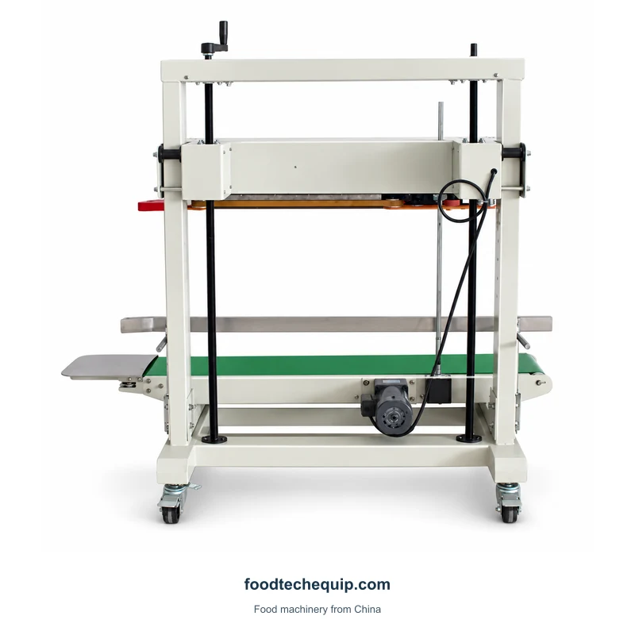
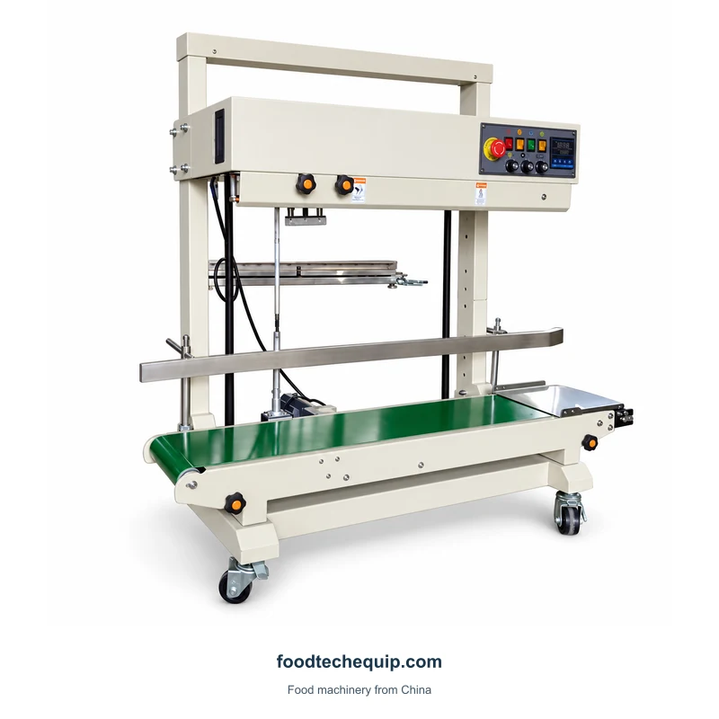

Запайка пакетов
Непрерывный ленточный запайщик
Непрерывный ленточный запаиватель наполненных мешков с конвейерной опорой и колесной базой.
Посмотреть оборудованиеЛенточное запечатывающее оборудование закрывает горловины наполненных пакетов. Настольная, вертикальная и конвейерная компоновка удовлетворяют различные потребности в представлении упаковки и ее транспортировке.
Непрерывный ленточный запаиватель наполненных мешков с конвейерной опорой и колесной базой.
Посмотреть оборудование
Вертикальный непрерывный ленточный запайщик с конвейерной опорой и рамой с регулировкой по высоте для представления заполненных пакетов.
Посмотреть оборудование
Вертикальный ленточный запайщик с конвейерной установкой доступен в конфигурациях FR-1100V и FRD-1200V.
Посмотреть оборудование
Вертикальный ленточный конвейер для запечатывания пакетов, включающий вакуумную и газовую продувку.
Посмотреть оборудование
Настольный ленточный запайщик непрерывного действия с конвейером и верхним запечатывающим узлом для обработки заполненных пакетов.
Посмотреть оборудование
Конвейерное запечатывающее оборудование для задач закрытия пакетов, включающих вакуумную и газовую продувку.
Посмотреть оборудование
Уплотнитель конвейерной ленты с соединениями для промывки газом и нижним обдувочным узлом.
Посмотреть оборудование
Вертикальный ленточный запайщик с конвейером и регулируемыми направляющими для пакетов.
Посмотреть оборудованиеПопробуйте другое ключевое слово или очистите фильтры.
Укажите заполненный вес, высоту мешка и пространство над продуктом. Эти детали помогают определить, как пакет достигает запечатанного положения и остается поддерживаемым во время транспортировки.
Для конфигураций с вакуумной или газовой промывкой укажите требования к атмосфере и готовой упаковке отдельно от скорости запечатывания.
| Область выбора | Что сравнивать | Что предоставить |
|---|---|---|
| Презентация сумки | Вертикальное и горизонтальное перемещение с опорой | Размеры и вес заполненного мешка |
| Закрытие задачи | Только герметизация или дополнительная обработка газа | Требуемая последовательность и конструкция пакета |
| Передача | Как горловина пакета достигает запечатывания | Положение опоры и доступное свободное пространство |
Начните с наполненного мешка и его опорного положения. Включите любые отдельные требования к порционированию или вакуумной обработке, чтобы предложение охватывало необходимые вам операции.